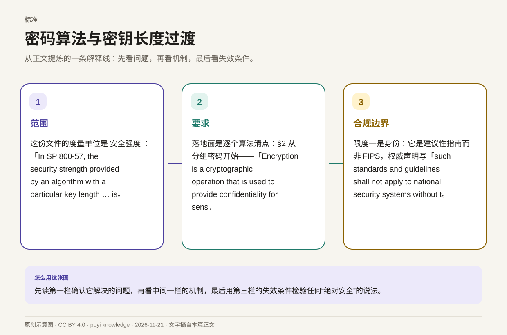
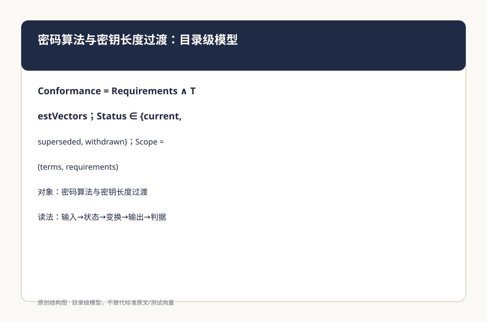

原理与机制
标准：密码算法与密钥长度过渡（Transitioning the Use of Cryptographic Algorithms and Key Lengths）。这份文件的度量单位是安全强度：「In SP 800-57, the security strength provided by an algorithm with a particular key length … is measured in bits and is a measure of the difficulty of subverting the cryptographic protection that is provided by the algorithm and key.」并且强调「Note that the length of the cryptographic keys is an integral part of these determinations.」——算法与密钥长度必须一起判定。

为什么重要
过渡之所以要成文，是因为算法会随算力失效：文件为联邦政府设定当下下限——「For the Federal Government, a security strength of at least 112 bits is required at this time for applying cryptographic protection (e.g., for encrypting or signing data).」，并把未来变数写进定义——「When post-quantum cryptography is introduced in NIST standards, quantum security strength, i.e.the difficulty of subverting the protection using quantum computers, will be defined.」，术语注释把口径本身一并给出：「The term "security strength" refers to the classical security strength - a measure of the difficulty of subverting the cryptographic protection (e.g., discovering the key) using classical computers.」。
应用与实例
落地面是逐个算法清点：§2 从分组密码开始——「Encryption is a cryptographic operation that is used to provide confidentiality for sensitive information, and decryption is the inverse operation.」并列出联邦用过的算法族，如「The Triple Data Encryption Algorithm (TDEA) (often referred to as Triple DES) is specified in SP 800-67, and has two variations, known as two-key TDEA and three-key TDEA.」。

边界与攻击面
限度一是身份：它是建议性指南而非 FIPS，权威声明写「such standards and guidelines shall not apply to national security systems without the express approval of appropriate federal officials exercising policy authority over such systems」，并加一句「Nothing in this publication should be taken to contradict the standards and guidelines made mandatory and binding on federal agencies by the Secretary of Commerce under statutory authority.」，权威声明还说它是「may be used by nongovernmental organizations on a voluntary basis and is not subject to copyright in the United States」的公开指南。限度二是时效：它把 128 位强度交给别处的时间表——「SP 800-57, Part 1 includes a transition to a security strength of 128 bits in 2030」，并自陈「However, this revision of SP 800-131A does not address this transition, but a future revision will include these considerations as well as transitions to post-quantum algorithms.」——128 位强度与后量子过渡都留给未来修订。
历史与背景
版本史可从自身与引用中读出：这是 Revision 2，标题行写「NIST Special Publication 800-131A Revision 2 Transitioning the Use of Cryptographic Algorithms and Key Lengths」；脚注 13 还把椭圆曲线批准口径挂到别处——「Until SP 800-186 is published, approved elliptic curves are specified in FIPS 186-4.」，把 TDEA 的弃用计划链接到 2017 年的 NIST 公告。该曲线指针只是 2019 年时的临时安排：本语料库内的 SP 800-186 标题日期为 2023 年 2 月，FIPS 186-5 亦于 2023 年 2 月 3 日取代 186-4，因此「approved elliptic curves are specified in FIPS 186-4」在今天已不成立。
逐步示例与核验
形式模型与复算步骤
[S=\min_i S_i,\quad S_i\in{\text{密钥强度},\text{分组安全},\text{实现安全}}]
密码算法与密钥长度过渡的公开参数、密钥/随机数与消息；变量说明：S 为综合安全强度；各分量取最小值，不能只看密钥位数。1.读取标准规定的密钥/分组/模式参数。2.按标准表换算等效强度。3.取最弱分量作为系统强度。边界：公式只覆盖已登记的参数与假设；参数取值、标准版本和实现细节仍以来源为准。
参考出处
- Wikipedia search entry for 密码算法与密钥长度过渡. https://zh.wikipedia.org/w/index.php?search=%E5%AF%86%E7%A0%81%E7%AE%97%E6%B3%95%E4%B8%8E%E5%AF%86%E9%92%A5%E9%95%BF%E5%BA%A6%E8%BF%87%E6%B8%A1
- Handbook of Applied Cryptography (Menezes, van Oorschot, Vanstone). https://www.cacr.math.uwaterloo.ca/hac/